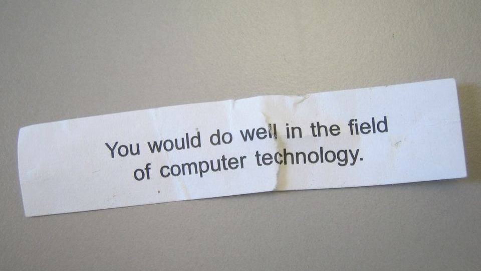

Kayseri'de siber güvenlik eğitimi: 90 kişi başvurabilecek

Görsel: Computer Technology Fortune · deanj · CC BY 2.0 · flickr
Kayseri'de siber güvenlik alanında uzman yetiştirmeyi hedefleyen bir yetkinlik merkezi kuruluyor. Merkez 90 katılımcı alacak ve başarılı olan 30 kişiyi uluslararası sertifika sınavlarına hazırlayacak.
Kayseri siber güvenlik merkezinde ne oldu?
Kayserim.net'in aktardığına göre yapının adı Bilişim Akademisi Siber Vatan Yetkinlik Merkezi. Çalışma, Kayseri Büyükşehir Belediyesi'nin Akıllı Şehircilik ve Bilgi İşlem Dairesi ile ORAN Kalkınma Ajansı iş birliğinde yürütülüyor.
RayHaber, projenin Sanayi ve Teknoloji Bakanlığı'nın Siber Vatan Programı kapsamında, Sosyal Gelişmeyi Destekleme Programı desteğiyle hayata geçirildiğini yazdı. Başvurular yalnız Kayseri'den değil, Yozgat ve Sivas'tan da alınacak.
Kayseri siber güvenlik eğitimi neden bu kadar arandı?
İlgiyi büyüten unsur, eğitimin ucundaki sertifikalar. Üç haber sitesinin de aktardığına göre başarılı 30 katılımcı CCNA, eCPPT, eMAPT, eWPTX ve CEHv13 sınavlarına hazırlanacak. Bunlar sektörde iş başvurularında aranan, uluslararası geçerliliği olan belgeler.
İkinci neden bölgesel kapsam. Üç ile açık bir program, bu illerde siber güvenlik eğitimine erişimi olan aday sayısını doğrudan artırıyor. Kayseri Haber, programın eğitimden uygulamaya ve istihdama uzanan bütünleşik bir model kurmayı amaçladığını aktardı.
Arka planda alandaki uzman açığı var. Anadolu Ajansı'nın ağustos ayında yayımlanan haberine göre Türkiye'de Gebze Teknik Üniversitesi, Ankara Üniversitesi ve Gazi Üniversitesi bünyesinde siber güvenlik meslek yüksekokulları ve bölümleri bulunuyor; öğrenciler ROKETSAN, HAVELSAN, TUSAŞ ve TÜRKSAT gibi kurumlarda staj yapıyor.
Aynı haberde Ankara Üniversitesi'nden bir yönetici, mezunların istihdam konusunda kaygı taşımadığını söyledi. Kayseri'deki merkez de benzer bir boşluğu belediye ve kalkınma ajansı eliyle, üniversite dışı bir kanaldan doldurmayı hedefliyor.
Kayseri siber güvenlik programında bilinenler ve henüz bilinmeyenler
Bilinen ayrıntılar: kontenjan 90 kişi, sertifika kotası 30 kişi, kapsam üç il, yürütücü kurumlar Büyükşehir Belediyesi ve ORAN Kalkınma Ajansı. Seçim süreci de belli; ön başvuru alınacak, şartları karşılayanlar sınav ve mülakattan geçirilecek.
Buna karşılık başvuru takvimi, eğitimin toplam süresi ve haftalık ders saati incelediğimiz üç haberde yer almıyor. Adaylarda aranacak eğitim düzeyi, yaş veya ön bilgi şartı da henüz açıklanmadı.
Eğitimin yüz yüze mi, çevrim içi mi yürütüleceği ve Yozgat ile Sivas'tan gelecek katılımcıların derslere nasıl erişeceği de açıklanan bilgiler arasında bulunmuyor.
Kayseri siber güvenlik başvurusunda sırada ne var?
Sıradaki adım ön başvuru çağrısının yayımlanması. Çağrıyla birlikte takvimin, aranan şartların ve sınav biçiminin netleşmesi bekleniyor. Üç haber de başvurunun sınav ve mülakat aşamalarını içereceğini belirtiyor.
Programın istihdam ayağının nasıl işleyeceği, yani sertifika alan katılımcıların hangi kurum veya şirketlerle eşleştirileceği de duyurulacak ayrıntılar arasında.
Kontenjanın üç il arasında nasıl paylaştırılacağı da henüz belli değil. Yozgat ve Sivas'tan başvuracak adaylar için ayrı bir kota bulunup bulunmadığı, incelediğimiz üç haberde belirtilmiyor.
Takip etmek için
- Kayseri Büyükşehir Belediyesi'nin resmî duyuru sayfası ve Akıllı Şehircilik ve Bilgi İşlem Dairesi açıklamaları
- ORAN Kalkınma Ajansı'nın Sosyal Gelişmeyi Destekleme Programı duyuruları
- Sanayi ve Teknoloji Bakanlığı'nın Siber Vatan Programı duyuruları
Sık sorulan sorular
Kayseri siber güvenlik eğitimine kimler başvurabilir?
Haberlere göre başvurular Kayseri, Yozgat ve Sivas illerinden alınacak. Eğitim düzeyi, yaş veya ön bilgi gibi ayrıntılı şartlar henüz açıklanmadı. Şartları karşılayan adaylar sınav ve mülakat aşamalarından geçirilecek.
Kaç kişi sertifika alacak?
Programa 90 katılımcı alınacak. Bunlardan başarılı olan 30 kişi CCNA, eCPPT, eMAPT, eWPTX ve CEHv13 sınavlarına hazırlanacak. Bu belgeler ağ altyapısı, sızma testi ve web uygulaması güvenliği gibi farklı uzmanlık başlıklarını kapsıyor.
Başvuru ne zaman açılıyor?
Başvuru takvimi incelediğimiz haberlerde yer almıyor. Sürecin ön başvuru, sınav ve mülakat aşamalarından oluşacağı belirtiliyor. Duyurunun Kayseri Büyükşehir Belediyesi ve ORAN Kalkınma Ajansı kanallarından yapılması bekleniyor.
Olgular şu yayıncıların haberlerinden derlendi: RayHaber, Kayseri Haber, Kayserim.net, Ensonhaber (Anadolu Ajansı). Metnin tamamı TrendSaphiens tarafından yazıldı; kaynaklarla kelime örtüşmesi %0.0 (eşik %5). Kaynaklarda olmayan bilgi eklenmedi.